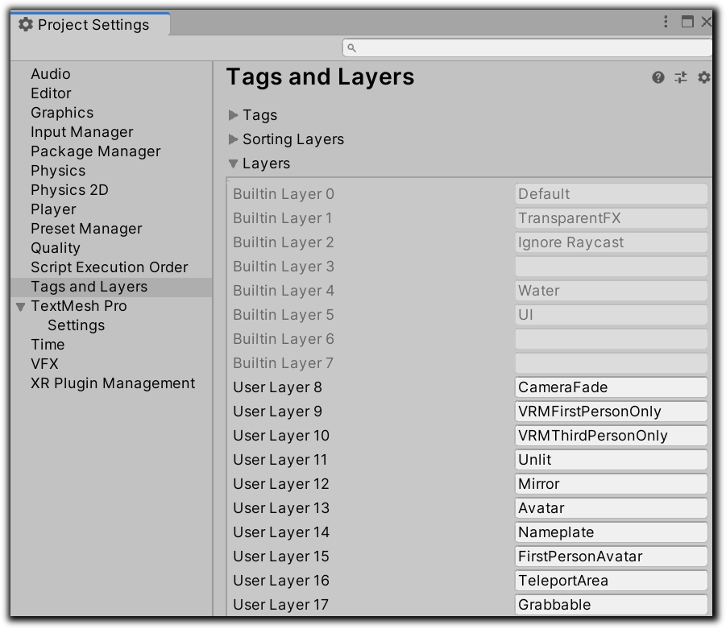
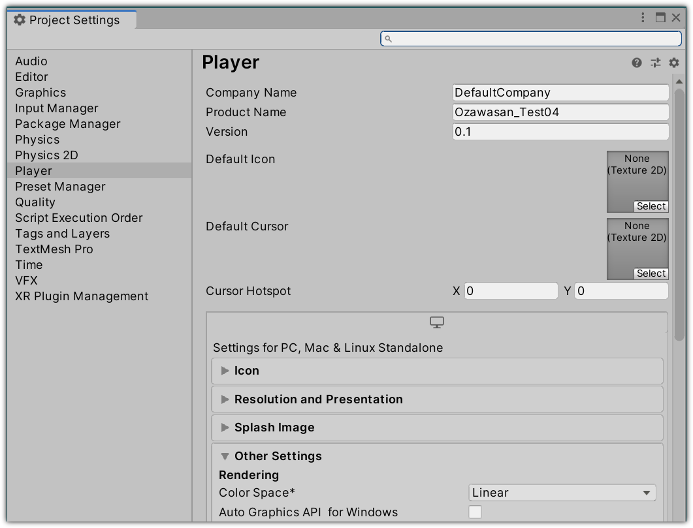

SDKのセットアップ
CCSDKのUnity Package ManagerパッケージはGithubよりダウンロードできます。
SDKの利用にはGitが必要となるので、 こちらからダウンロードしてください。
SDKをインストールするには、manifest.jsonファイルに次の行を追加します。
"com.dmm.vrlab.ccsdk": "https://github.com/dmm-com/vrlab-ccsdk.git#v1.1.0",
プロジェクトテンプレート
ワールド作成のテンプレートとして利用できるプロジェクトを用意いたしましたので、ご活用ください。
- こちらより zipファイルをダウンロードします。
- プロジェクトのための新しいフォルダを作成し、その中に解凍したファイルを入れてください。
- Unity Hubを起動し、プロジェクト一覧に新しく作成したフォルダを追加します。
- 新しいプロジェクトを開くと、UnityがSDKをそのプロジェクトにインポートします。
- あなただけのワールドを作りましょう！
テンプレートプロジェクトを使用しない場合は、必ず以下に示すようにレイヤーを構成してください。

さらに、プロジェクトのカラースペースを_Linear_にしてください、
